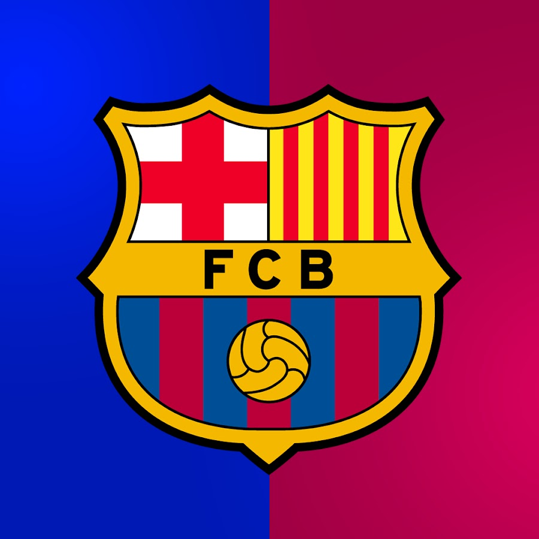

FC Barcelona
El FC Barcelona es uno de los equipos más importantes del mundo, con una rica historia de victorias tanto en competiciones nacionales como internacionales. Sus jugadores más destacados incluyen Lionel Messi, quien ha sido una de las mayores figuras del club durante muchos años.
- Estadio: Camp Nou
- Fundación: 1899
- Títulos ganados: 26 Ligas, 5 Champions League